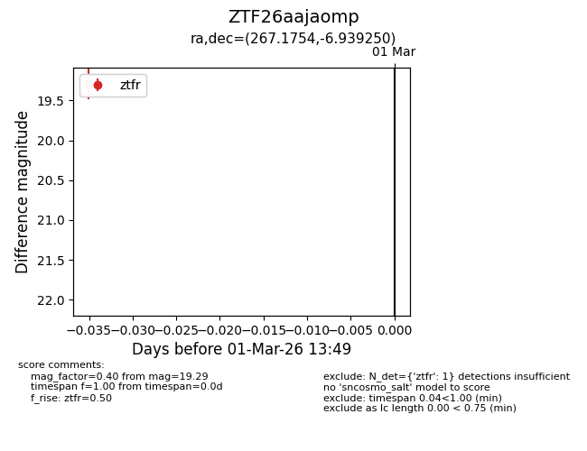
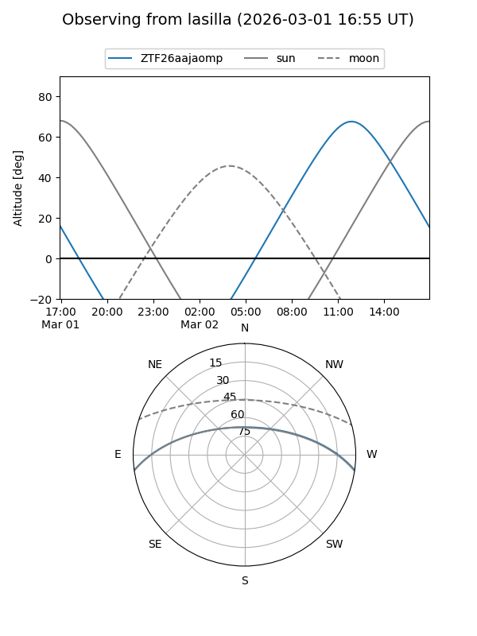
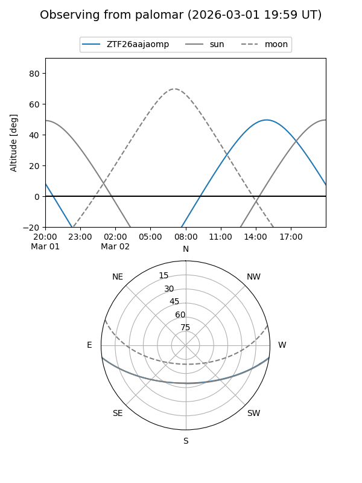

ZTF26aajaomp
Target ZTF26aajaomp at 2026-03-01 13:50
Aliases and brokers:
FINK: link
Lasair: link
ALeRCE: link
alt names
ZTF26aajaomp (ztf,fink_ztf)
Coordinates:
equatorial (ra, dec) = 267.1754,-6.93925
equatorial (HMS+DMS) = 17:48:42.11,-06:56:21.30
galactic (l, b) = (19.4068,+10.58765)
Flags:
Photometry:
last ztfr=19.29
1 ztfr detections
Lightcurve

Visibility


Additional plots